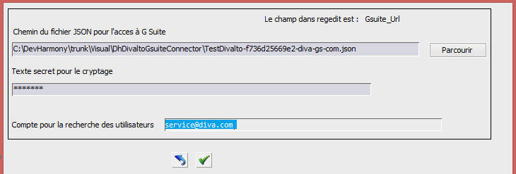

Il faut maintenant permettre au serveur d'application Harmony de récupérer et exploiter ces nouvelles informations.
Pour cela, il faut lancer le programme diva xdivaltoparammapigsuite.dhop.
Ce programme va lire la liste des utilisateurs G Suite et extraire les comptes Windows associés à chaque utilisateur (en accédant à l'attribut personnalisé qui a été paramétré dans les étapes précédentes).

Il est nécessaire de renseigner un compte d'utilisateur G Suite (service@diva.com dans la capture ci-dessus). Ce compte DOIT disposer des droits d'accès en lecture aux informations des utilisateurs.
Pour autant, ce compte n'a pas besoin de droits d'administration, et non recommandons de ne pas utiliser un compte d'administration pour cette opération.
Remarque :
Les opérations décrites dans cette section rendent obsolète la Saisie des comptes G Suite dans Divalto Infinity.
Si des comptes G Suite ont déjà été renseignés dans l'ERP par des utilisateurs, il est conseillé que ceux-ci suppriment les paramètres qu'ils ont saisis car il pourrait y avoir conflit avec les DivaltoInfinityWinAccount du compte G Suite.